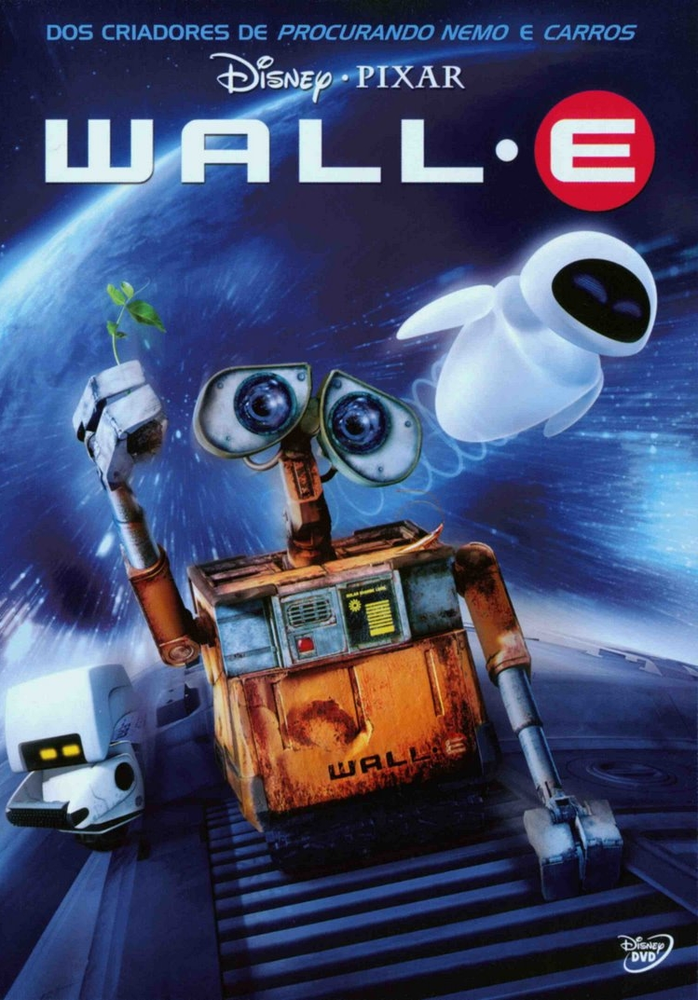

Categoria: Ficção Científica
Filmes
Perdido em Marte
Wall-E
Godzilla
De voltar para o Futuro
Perdido em Marte
Sinopse e Detalhes:
O astronauta Mark Watney é enviado a uma missão para Marte, mas após uma severa tempestade, ele é dado como morto, abandonado pelos colegas e acorda sozinho no planeta inóspito com escassos suprimentos e sem saber como reencontrar os companheiros ou retornar à Terra. Ele inicia então uma dura luta pela própria sobrevivência, utilizando de todo o seu conhecimento científico para fazer contato e retornar para casa.
Clique
aqui
para assistir ao trailer.
Lançamento:
01/10/2015 / 2h 24min
Direção:
Ridley Scott
Elenco:
Matt Damon, Jessica Chastain, Kristen Wiig
Título Original:
The Martian
Wall-E

Sinopse e Detalhes:
Após entulhar a Terra de lixo e poluir a atmosfera com gases tóxicos, a humanidade deixou o planeta e passou a viver em uma gigantesca nave. O plano era que o retiro durasse alguns poucos anos, com robôs sendo deixados para limpar o planeta. Wall-E é o último destes robôs, que se mantém em funcionamento graças ao auto-conserto de suas peças. Sua vida consiste em compactar o lixo existente no planeta, que forma torres maiores que arranha-céus, e colecionar objetos curiosos que encontra ao realizar seu trabalho. Até que um dia surge repentinamente uma nave, que traz um novo e moderno robô: Eva. A princípio curioso, Wall-E logo se apaixona pela recém-chegada.
Clique
aqui
para assistir ao trailer.
Lançamento:
27/06/08 / 1h 37min
Direção:
Andrew Stanton
Elenco:
Ben Burtt, Elissa Knight, Jeff Garlin
Título Original:
WALL-E
Godzzila
Sinopse e Detalhes:
Joe Brody (Bryan Cranston) criou o filho sozinho após a morte da esposa (Juliette Binoche) em um acidente na usina nuclear em que ambos trabalhavam, no Japão. Ele nunca aceitou a catástrofe e quinze anos depois continua remoendo o acontecido, tentando encontrar alguma explicação. Ford Brody (Aaron Taylor-Johnson), agora adulto, é soldado do exército americano e precisa lutar desesperadamente para salvar a população mundial - e em especial sua família - do gigantesco, inabalável e incrivelmente assustador monstro Godzilla.
Clique
aqui
para assistir ao trailer.
Lançamento:
15/05/14 / 2h 03min
Direção:
Gareth Edwards
Elenco:
Aaron Taylor-Johnson, Bryan Cranston, Ken Watanabe
Título Original:
Godzilla
De volta para o Futuro
Sinopse e Detalhes:
Marty McFly, um adolescente de uma pequena cidade californiana, é transportado para a década de 1950 quando a experiência do excêntrico cientista Doc Brown dá errado. Viajando no tempo em um carro modificado, Marty conhece versões jovens de seus pais e precisa fazer com que eles se apaixonem, ou então ele deixará de existir. Para complicar, Marty precisa voltar para casa a tempo de salvar o cientista.
Clique
aqui
para assistir ao trailer.
Lançamento:
25/12/1985 / 1h 56min
Direção:
Robert Zemeckis
Elenco:
Michael J. Fox, Christopher Lloyd, Lea Thompson, Crispin Glover
Título Original:
Back to the Future
Topo
© Bruna Prado